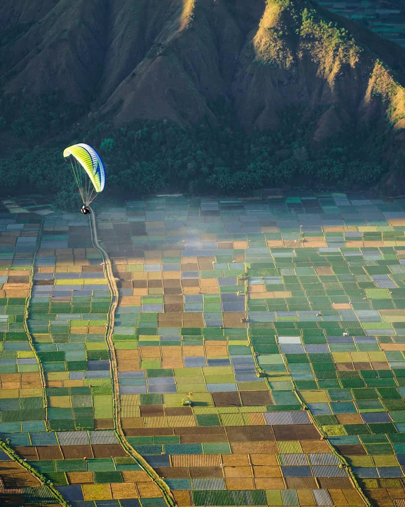
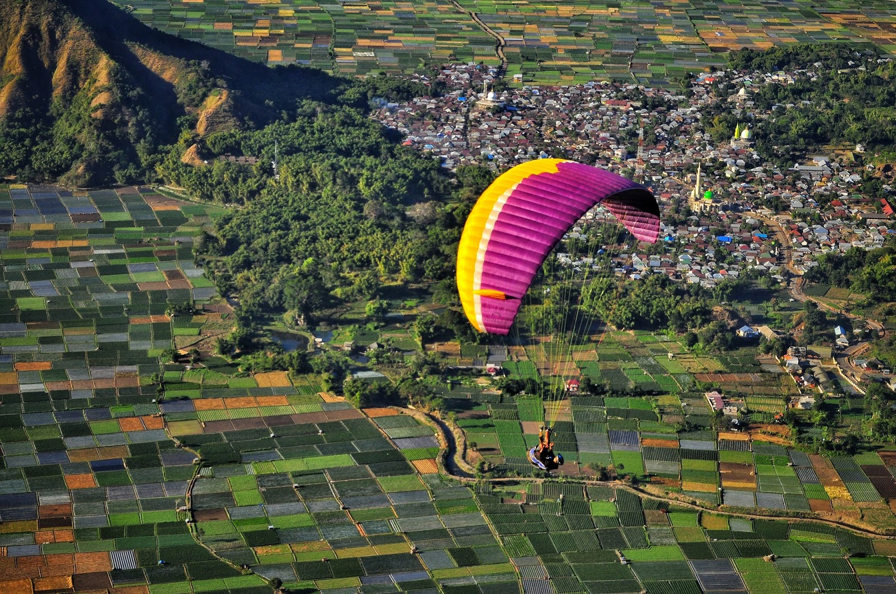

Post by dayat, Sunday 06 Juny 2018
Gunung Rinjani selalu memikat para wisatawan yang berkunjung ke Lombok, NTB. Dari Bukit Pergasingan, Gunung Rinjani tampak indah sekali. Jalur pendakian ke Rinjani dahulu cuma ada dua yaitu dari Senaru dan Sembalun. Namun sekarang sudah ada beberapa jalur pendakian. Bagi yang tidak mengejar puncak gunung biasanya wisatawan naik melalui Senaru. Namun bagi wisatawan yang mengejar puncak, biasanya mereka naik dari Sembalun.
Tetapi bagi mereka yang tak sanggup naik walau sampai Segara Anak, wisatawan bisa berfoto-foto dengan latar belakang Gunung Rinjani. Bukit Pergasingan Lombok, kini muncul kepermukaan sebagai tempat wisata baru yang menjadi favorit bagi wisatawan terutama pecinta alam dan pendaki gunung, terletak di desa sembalun, bukit pergasingan merupakan sebuah bukit yang menjulang tinggi yang terletak disamping gunung rinjani.
Bukit pergasingan memiliki ketinggian 1670 mdpl hanya selisih 56 meter dari gunung andong di magelang, bukit pergasingan menawarkan pemandangan kotak-kotak sawah desa sembalun yang berwarna warni, selain sawah desa sembalun, kita akan melihat gunung rinjani berdiri kokoh didepan mata, ditambah lagi sunrise di puncak bukit pergasingan juga tak kalah indah Tiba di puncak satu Bukit Pergasingan, sabana cukup luas menghampar. Dari puncak satu, Gunung Rinjani berdiri gagah menantang langit. Sebuah kolam air besar bersebelahan dengan kebun sayur terlihat dari puncak satu.
Arpini menuturkan bahwa kolam itu merupakan penampungan air untuk irigasi ladang sayur. Bukit Pergasingan yang ada di Lombok ini memang menawan. Apalagi biasanya bukit keren yang satu ini dimanfaatkan sebagai salah satu tempat pemanasan sebelum naik ke Gunung Rinjani. Atau bisa juga sebagai alternatif pendakian jika misalnya jalur pendakian Gunung Rinjani sedang ditutup. Di Bukit Pergasingan, wisatawan bisa melihat Gunung Rinjani dengan jelas dan tentunya bisa berfoto dengan latar belakang gunung tersebut. Untuk mencapai bukit tersebut dibutuhkan perjuangan yang tak mudah.
Misalkan Anda mau mengejar sunrise, Anda harus datang ke Bukit Pergasingan pagi. Nah maka dari itu, sehari sebelum ke Bukit Pergasingan, Anda harus menginap dahulu di penginapan-penginapan di daerah Sembalun. Karena dari Kota Mataram menuju Sembalun dibutuhkan waktu tempuh 4-5 jam. Dari Sembalun menuju Bukit Pergasingan, Anda bisa menempuh dengan mobil atau motor. Lalu kemudian Anda harus bersiap mendaki dan menaiki sekitar 70 anak tangga untuk mencapai spot foto atau pemandangan Rinjani pertama. Bila Anda punya waktu banyak dan cukup kuat, Anda bisa mencapai puncak dari Bukit Pergasingan.
Saya dari penginapan di Sembalun berangkat sekitar pukul 05.00 WITA dan tiba di bukit sekitar pukul 05.20 WITA. Masya Allah, setelah saya mendaki dan mencapai spot pertama saja, saya bisa melihat keindahan ciptaan Tuhan. Bisa dibilang bukit pergasingan memiliki persamaan dengan gunung andong di magelang, apabila di gunung andong kita akan melihat pemandangan sawah desa sekitar dan gunung merbabu yang berdiri kokoh didepan mata.
Di bukit pergasingan kita juga bisa melihat gunung rinjani, persawahan desa sembalun dan sunrise yang tak kalah indah dari gunung Andong, kita sebut saja bukit pergasingan andong-nya lombok. Karena pendakiannya tidak terlalu lama, hanya memakan waktu sekitar 1-2 jam jadi banyak wisatawan terutama pelajar dan mahasiswa yang datang kesini untuk menghabiskan akhir pekan, selain itu lokasi wisata bukit pergasingan juga dijadikan sebagai spot paralayang dan downhill. Karena jernihnya air sungai di Bukit Pergasingan, beberapa ikan kecil pun tampak di sungai tersebut. Selain itu di bukit ini, kebersihan lingkungannya masih terjaga.
Selain puncak satu, pendaki dapat menuju puncak dua yang berjarak sekitar 1,5 kilometer dari titik pemberhentian pertama. Jalur yang ditempuh cenderung landai dan melewati hutan tropis yang ditumbuhi rerumputan. Serta melintasi deretan pohon cemara gunung yang tumbuh di bukit. Setelah mendaki bukit gundul tanpa pepohonan, kanopi dari hutan cukup membuat teduh dari paparan sinar matahari.
Di ujung jalur, puncak dua menghampar ditumbuhi rerumputan. “Itu ujung Pulau Lawang dan Sulat. Gili Lawang dan Sulat-nya bagus. Kalau tidak berkabut bisa lihat laut,” kata Arpini yang juga pemandu pendakian Gunung Rinjani. Pendakian Bukit Pergasingan dapat ditempuh dalam dua hari satu malam perjalanan. Idealnya para pendaki mengejar matahari terbit di ufuk timur yang langsung muncul dari arah laut.
Pendakian umumnya dimulai ketika dini hari pukul 02.00 WITA dan tiba sebelum fajar menyingsing. Untuk perizinan dan pemandu pendakian, pendaki dapat menghubungi komunitas lokal yaitu Pusat Pengembangan Masyarakat Sembalun.
Sumber : https://mataramweb.com/bukit-pergasingan-lombok-timur/
Air Terjun Benang Kelambu
Gunung Rinjani
Air Terjun Tiu Kelep
Gili Trawangan
Pulau Moyo